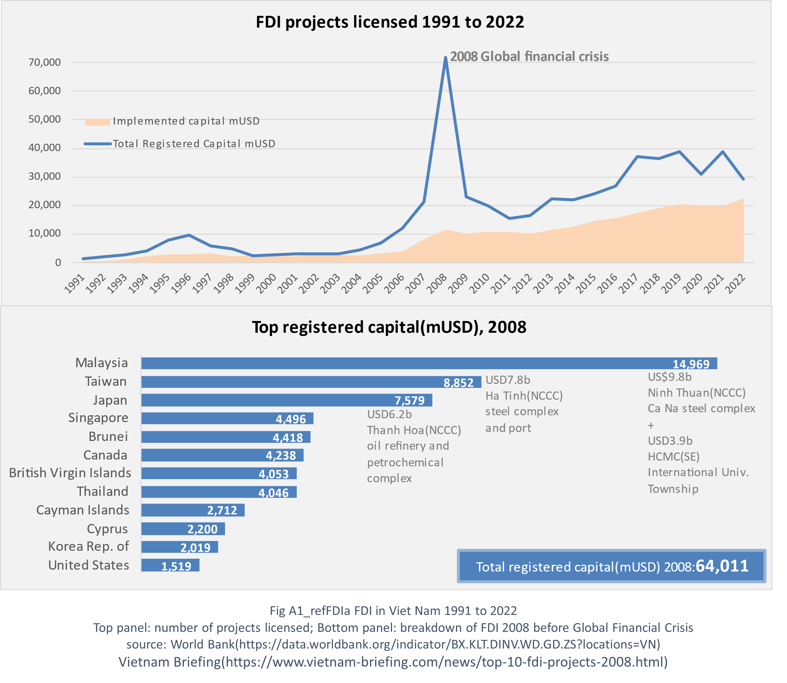
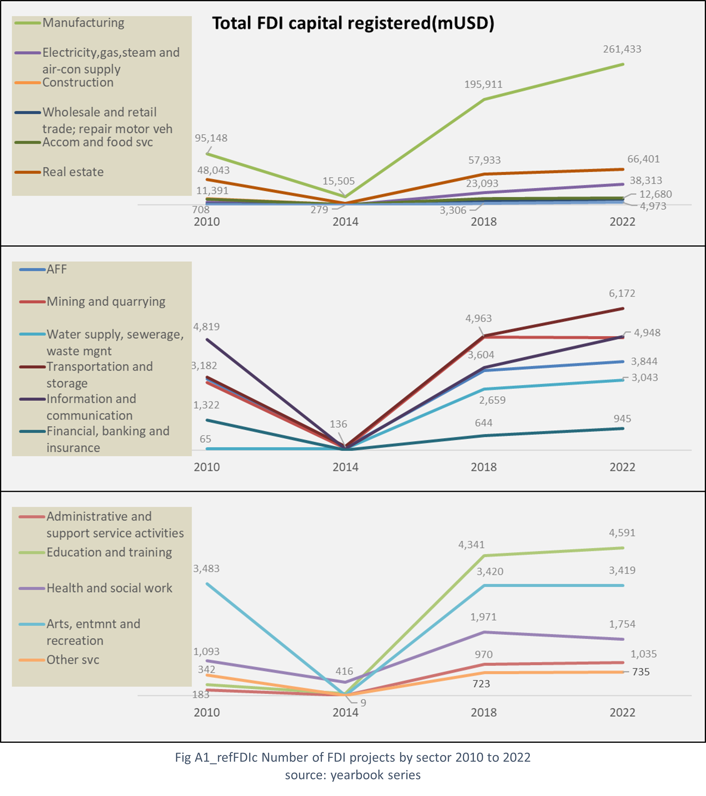

Why Vietnam welcomes Foreign Direct Investment (FDI)
FDI fuels economic development (1991–2022)
Attracting FDI helped Vietnam develop its post-war economy, laying the foundation for improving food access and national well-being.
Shifting labor from farms to factories
As FDI drove industrial growth, labor reallocated from agriculture to manufacturing — changing income patterns and triggering migration.
Encouraging rural modernization
With labor moving out of farming, Vietnam is motivated to adopt agricultural technologies to maintain productivity and food output.
Targeted regional development (2008)
Major FDI pledges focused on the North Central and Central Coast regions, aiming to improve infrastructure and economic access there.
Managing external shocks (e.g. 2008 crisis)
Vietnam’s experience with delayed implementation during the Global Financial Crisis highlighted the need for resilient investment strategies.
Focus on manufacturing sector (2010–2022)
Most FDI went into manufacturing, creating jobs and raising income levels — key pillars that support long-term food affordability and security.

